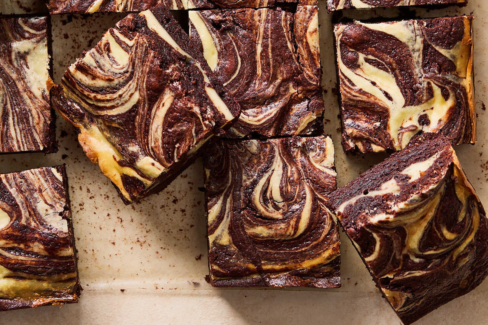

Cream Cheese Brownies

Description
What’s better than rich and fudgy cocoa brownies? Decadent brownies with a layer of creamy cheesecake swirled throughout. When making the cheesecake layer, the cream cheese should be just soft enough to incorporate with the other ingredients easily but not super soft. If it is too warm, the cheesecake batter will be too runny and will flow over the top of the brownies. Instead of creating a swirl, you’ll have two layers. If you want to take these brownies to another level, dollop a bit of your favorite jam or preserves on top of the cream cheese batter before swirling everything together.
Ingredients
- Yield: 16 servings
- For the Cream Cheese Batter:
- 8 ounces cream cheese, softened
- 1 large egg
- ¼ cup / 31 grams powdered sugar
- 1 tablespoon all-purpose flour
- 1 teaspoon pure vanilla extract
- For the Cocoa Batter:
- 10 tablespoons / 141 grams unsalted butter, plus more for the pan
- 1 cup / 200 grams granulated sugar
- ⅓ cup / 50 grams semisweet chocolate chips
- 2 large eggs
- 1½ teaspoons vanilla extract
- ¾ cup / 96 grams all-purpose flour
- ¾ cup / 71 grams unsweetened cocoa powder (Dutch-processed or natural)
- ½ teaspoon baking powder
- ¾ teaspoon kosher salt (such as Diamond Crystal)
Preparation
-
Step 1: Heat the oven to 350°F (175°C). Butter and line an 8-inch square baking pan with parchment paper, leaving a 2-inch overhang on 2 sides to make a sling. Lightly butter the parchment.
-
Step 2: Make the cream cheese batter: In a medium bowl, beat together the cream cheese, egg, powdered sugar, flour, and vanilla until well combined.
-
Step 3: Prepare the cocoa batter: In a medium saucepan over medium heat, combine the butter and sugar. Cook, stirring, until the butter is melted, then remove the pot from the heat. Whisk vigorously until the mixture is homogenous and opaque and the sugar has dissolved, about 4 minutes. Add the chocolate and let stand for 1 minute. Whisk to combine.
-
Step 4: Add the eggs and vanilla and whisk until smooth. Add the flour, cocoa powder, baking powder, and salt and stir to combine. Transfer about two-thirds of the cocoa batter to the prepared pan and spread in an even layer.
-
Step 5: Spread the cream cheese batter evenly over the cocoa batter, then dollop the remaining one-third of the cocoa batter over the cream cheese layer. Using a butter knife, swirl the batters together in a decorative pattern.
-
Step 6: Bake until the brownies are set and a toothpick inserted in the center comes out with moist crumbs attached, 24 to 28 minutes. Transfer the pan to a rack to cool completely.
-
Step 7: To serve, use the parchment overhang to lift the brownie out of the pan and transfer to a cutting board. Cut into squares. Store in an airtight container at room temperature for up to 3 days.